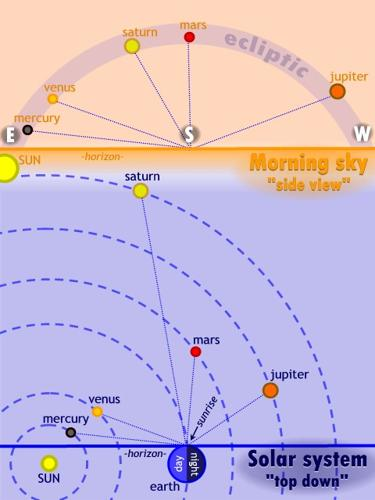

For a short period of time in early 2016, six planets are visible in the early morning sky. (Yes, six! You're standing on one of them.) I made an infographic to help illustrate what you're seeing…

How we perceive the sky and how the objects in the sky are actually arranged can be drastically different. I remember having a hard time reconciling what I saw in textbooks with what I saw when I looked up at night. I think the problem is twofold: perspective and experience.
We see things here on Earth from a 'first-person perspective.' That is, looking out from the earth and seeing the solar system from one, fixed perspective — how the earth 'sees' it. You have to remember, the earth and 'space' are not two separate things. The earth is part of space… part of the Solar System. We're down here on this planet hanging around the Sun just like all the other planets. We're one of them… the earth is no different. So when you look up in the sky, you have to try and imagine standing on a gigantic rock floating in space where the 'blackness' extends around and even underneath you… under this floating rock we call Earth. Spaceship Earth!
Our experience as a species has led us to believe that things we can see are relatively close, and things that are hard to see are usually really far away. On Earth, even on a clear day, there's a limit to how far you can see. One, because of the curvature of the earth — you can't see around corners, light doesn't bend that way — and two, there's always something in the way, even if it's just air. We've all experienced a humid day when the air is hazy and things off in the distance look blurred and hard to make out. That's because even though air is pretty clear, there's still stuff in it and it still bounces light around. It may not seem like that much down here, but that's because things 'down here' are relatively close. Stuff in space is FAR. Like, really far…
We are a product of our environment and Space is not like anything we've experienced. It's drastically different than anything we've come into contact with here on Earth — ever. Space is HUGE, and space is empty; way bigger than we could ever imagine, and much more empty than we can imagine. So there's a disconnect… It's hard for us to wrap our minds around the fact that you can see something that big and that far away so clearly.
So when you look out into that inky blackness, try to imagine the distance between you and those planets. Try to instill a 'depth' to the sky. I know it looks like one big 2-D black dome, but what you're actually seeing is very three-dimensional. Try to realize that those tiny points of light in the sky we call planets are actual places — places you could theoretically travel to. That red one there, Mars, has robots driving around on it!
It is difficult to overcome billions of years of evolution telling you that what you see when you look up is just a flat backdrop, but with a little information and a lot of imagination you can transform that static dome into a real, dynamic environment!